Selecione um artigo na lista ao lado para ler.
"Svākkhāto Bhagavatā dhammo, sandiṭṭhiko, akāliko, ehipassiko, opaneyyiko, paccattaṃ veditabbo viññūhīti."
"O Dhamma é bem ensinado pelo Abençoado, visível aqui e agora, atemporal, convidativo à investigação (ehipassiko), que conduz adiante, para ser vivenciado e compreendido diretamente pelos sábios.".
— Dhammanussati (Recitação das Qualidades do Dhamma)Originalmente ensinado pelo Buda no Dhajagga Sutta (SN 11.3) como um antídoto para o medo.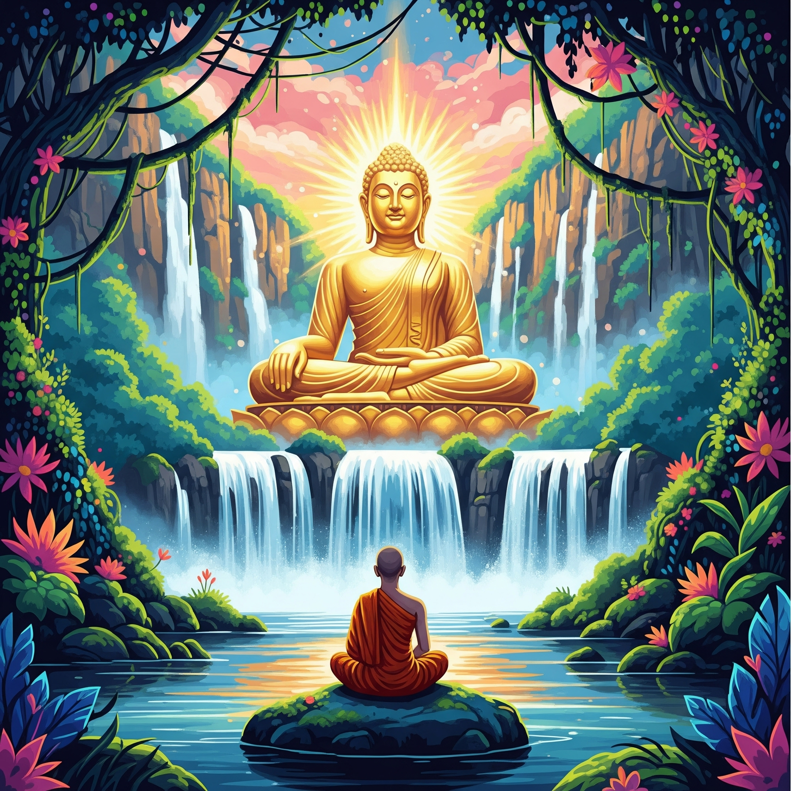
No coração desta recitação diária tradicional do Budismo Theravada, encontra-se a expressão ehipassiko. Que se trata de um convite aberto feito pelo Buda para "vir e ver". Não há exigência de fé cega ou aceitação passiva de dogmas, mas sim um chamado prático à investigação. O Dharma nos instiga a testar e validar a verdade das coisas como elas são por meio da nossa própria experiência direta.
Foi exatamente esse espírito investigativo que criei esse site. Após muitos anos caminhando no budismo como praticante esporádico, senti a necessidade de aprofundar a minha prática pessoal e meus estudos do dharma, e aqui será o registro vivo da minha resposta pessoal ao convite de "vir e ver".
Que este site não seja apenas o diário da minha própria jornada de investigação, mas que possa de alguma forma inspirar a sua própria prática. Explore, leia e veja por si mesmo.
Que todos os seres sejam felizes e pacíficos.
Estudo
Não vou entrar em questões pessoais aqui, mas desde cedo eu tive que aprender a lidar com o sofrimento (dukkha) e a impermanência (anicca) e aos meus 27 anos eu soube da exisência do budismo e sobre como um príncipe que tinha de tudo e vivia isolado em um castelo um belo dia descobriu a velhice, a doença, a morte e a busca espiritual, renunciou à tudo o que tinha e decidiu seguir um caminho ascético em busca pela libertação do sofrimento. Aos 29 anos ele renunciou, aos 35, após desvendar os mecanismos da mente, ele finalmente alcançou a libertação final (Nibbana) e passou a ensinar esse caminho até os 80 anos, quando entrou em parinibbana.
Logo nas primeiras leituras eu já aprendi sobre as quatro nobre verdades e sobre como estamos todos presos em um ciclo incontável de nascimento, sofrimento, morte e renascimento chamado Samsara. Esse renascimento ocorre como uma continuidade de causa e efeito, como uma vela que acende outra vela. A chama não é a mesma, mas também não é totalmente diferente; ela é uma continuação causal. Nosso Kamma (ação intencional) gera um Vipāka (resultado ou fruto), que influencia esse renascimento.
Essa é a base de todo o budismo, porém se você começar a ler mais sobre, vai começar a se deparar com as diferenças e singularidades de cada uma das diferentes tradições e escolas budistas. Eu queria entender melhor sobre cada uma antes de decidir qual eu iria seguir e não demorou muito para eu escolher pelo Theravada (a "Escola dos Anciãos"). Por ser a tradição viva mais antiga do budismo, aquela que busca preservar, com o máximo de fidelidade, as palavras e os métodos do Buda histórico, e também pelo fato de os monges fazerem uma renuncia real, abrindo mão da posse de dinheiro, se alimentando somente até o meio dia, com forte ênfase na pindapata (a ronda diária de esmolas, onde dependem da generosidade da comunidade), além das demais regras de austeridade do Vinaya (código de conduta monástica estabelecido por Buda).
Tenho um imenso respeito pelas demais linhagens desenvolvidas ao longo do mundo onde o dhamma original se mesclou com características da cultura local, e adoro visitar templos de outras tradições, porém, para a minha caminhada pessoal, prefiro a sobriedade dos ensinamentos originais. Prefiro não seguir suttas desenvolvidos após o paranibbana de Buda e sendo muito honesto, com todo o respeito às adaptações culturais e filosóficas posteriores, vejo que algumas escolas integraram conceitos e práticas tão distantes daquilo que o Buda historicamente viveu e ensinou que, aos meus olhos, parecem trilhar um caminho essencialmente diferente, apesar de eles verem essas novas práticas como "avanço", "melhoria", eu prefiro seguir somente com os ensinamentos proferidos pelo próprio Buda Shakyamuni e que constam no Cânone Páli.
Quando estudamos a vida do Buda (Sammā Sambuddha - O Perfeitamente Desperto), é importante notar a diferença entre a cronologia tradicional asiática e os estudos históricos modernos. A tradição do Theravada (A Doutrina dos Anciãos) convencionou que o Buda viveu entre 624 a.C. e 544 a.C. No entanto, o consenso acadêmico atual, fortemente fundamentado por historiadores e indologistas de renome como Richard Gombrich e Heinz Bechert (especialmente após as extensas pesquisas sobre a chamada "Cronologia Curta"), situa a vida de Gotama um pouco mais tarde, no século V a.C. Segundo essas evidências cruzadas, o seu nascimento ocorreu por volta de 480 a.C. e o seu falecimento por volta de 400 a.C.
Abaixo, os principais marcos biográficos da sua jornada em busca do despertar, conforme documentado no Cânone em Pāli:
-
O Nascimento e a Vida Palaciana
Siddhattha Gotama (que significa "Aquele que atinge seu objetivo") nasceu em Lumbini (atual Nepal), filho do líder do clã dos Sakyas. Durante seus primeiros 29 anos, o Bodhisatta (o ser em busca do despertar) viveu uma vida de extrema abastança, protegido pelo pai de qualquer visão de sofrimento do mundo exterior, casando-se e tendo um filho. -
A Motivação e a Grande Renúncia
Aos 29 anos, ao sair dos portões do palácio, Gotama se deparou com as famosas Quatro Visões: um idoso, um doente crônico, um cadáver e um asceta sereno. Isso gerou nele o que chamamos de Saṃvega (um profundo senso de urgência espiritual diante da vulnerabilidade humana). No Ariyapariyesana Sutta (MN 26 - O Discurso da Nobre Busca), o Buda descreve sua motivação: percebeu que, sendo sujeito à velhice, doença e morte, era insensato buscar felicidade em coisas que também adoecem e morrem. Decidiu então buscar o imortal e supremo santuário da paz, o Nibbāna. Isso o levou à Mahābhinikkhamana (A Grande Renúncia), abandonando o palácio para se tornar um buscador espiritual. -
O Ascetismo e o Caminho do Meio
Durante seis anos, Gotama estudou com grandes mestres de meditação, dominando os mais altos estados de concentração, mas percebeu que isso não erradicava a raiz do sofrimento. Adotou então práticas ascéticas extremas (jejum severo, mortificação do corpo), quase morrendo no processo. No Mahāsaccaka Sutta (MN 36 - O Grande Discurso a Saccaka), ele relata como percebeu que a mortificação apenas enfraquecia a mente. Aceitou uma tigela de alimento para recuperar as forças e descobriu a Majjhimā Paṭipadā (O Caminho do Meio): a prática que evita tanto a indulgência sensual quanto a tortura física. -
O Despertar (Sammā Sambodhi)
Aos 35 anos, sentado sob a árvore Bodhi, ele purificou a sua mente. Durante a noite, destruiu as correntes da ignorância (Avijjā) e do desejo (Taṇhā), compreendendo a origem dependente de todas as coisas e as Quatro Nobres Verdades. Ele se tornou o Buddha (O Desperto) ou o Tathāgata (Aquele que alcançou a Verdade). -
O Ensino e o Parinibbāna
O Buda caminhou pelas planícies do norte da Índia por 45 anos, ensinando o Dhamma por compaixão a todas as classes sociais e fundando a Saṅgha (comunidade monástica). Aos 80 anos, ele faleceu. Como relatado no Mahāparinibbāna Sutta (DN 16), suas últimas palavras foram um chamado à responsabilidade: "Todas as coisas condicionadas são sujeitas ao declínio. Esforcem-se com diligência". Com isso, ele alcançou o Parinibbāna (a extinção final, o fim definitivo do ciclo de renascimentos). -
Os concílios budistas
-
O Primeiro Concílio (Três meses após o Parinibbāna):
Realizado em Rājagaha e liderado pelo Venerável Mahākassapa. Quinhentos monges totalmente iluminados (Arahants) se reuniram para compilar os ensinamentos. O Venerável Ānanda, que tinha memória fotográfica, recitou todos os discursos (Suttas - a doutrina), enquanto o Venerável Upāli recitou todas as regras monásticas (Vinaya - a disciplina). -
O Segundo Concílio (Cerca de 100 anos depois):
Realizado em Vesālī, surgiu devido a divergências sobre o relaxamento de regras disciplinares (como aceitar dinheiro) por alguns monges. A ortodoxia foi mantida, mas este evento marcou as primeiras sementes de separação que dariam origem a diferentes escolas budistas no futuro. -
O Terceiro Concílio (Século III a.C.):
Patrocinado pelo grande Imperador Asoka na cidade de Pāṭaliputta. Sob a liderança do monge Moggaliputta Tissa, a Saṅgha foi purificada de falsos monges, e a terceira cesta de ensinamentos, o Abhidhamma (psicologia e filosofia budista profunda), foi formalizada, completando o Tipiṭaka (As Três Cestas do Cânone em Pāli). A partir deste concílio, missionários foram enviados para várias partes da Ásia, incluindo o Sri Lanka, onde o Budismo Theravada deitou raízes profundas. -
O Quarto Concílio (Século I a.C.):
Realizado no Sri Lanka, em um período de grande fome e guerras. Temendo que os monges que memorizavam os textos morressem e os ensinamentos fossem perdidos, o Cânone em Pāli foi, pela primeira vez na história, escrito em folhas de palmeira. Foi este imenso esforço histórico que garantiu que as palavras do Buda chegassem até os dias de hoje com tamanha fidelidade.
-
O Primeiro Concílio (Três meses após o Parinibbāna):
Historicamente:
Quando estudamos a vida de Buda, é importante notar a diferença entre a cronologia tradicional asiática e os estudos históricos modernos. A tradição Theravada convencionou que o Buda viveu entre 624 a.C. e 544 a.C. No entanto, o consenso acadêmico atual, fortemente fundamentado por historiadores e indologistas de renome como Richard Gombrich e Heinz Bechert (especialmente após as extensas pesquisas sobre a chamada "Cronologia Curta"), situa a vida de Gotama um pouco mais tarde, no século V a.C. Segundo essas evidências cruzadas, o seu nascimento ocorreu por volta de 480 a.C. e o seu falecimento por volta de 400 a.C.
Fontes:
- "Buddha", Stanford Encyclopedia of Philosophy (Estudos sobre a Cronologia Curta).
- BECHERT, Heinz (Ed.). The Dating of the Historical Buddha (Symposien zur Buddhismusforschung, IV). Göttingen: Vandenhoeck & Ruprecht, 1991-1992.
- GOMBRICH, Richard. "Dating the Buddha: A Red Herring Revealed". In: The Dating of the Historical Buddha, Vol. 2. Göttingen, 1992.
- PREBISH, Charles S. "Buddhist Councils". Oxford Bibliographies in Buddhism.
- Relatos originais preservados no Vinaya Piṭaka (Cullavagga, Capítulos 11 e 12), disponíveis na plataforma acadêmica SuttaCentral.
- GEIGER, Wilhelm. "The Mahāvaṃsa or The Great Chronicle of Ceylon". Pali Text Society.
O Tipiṭaka: Os Três Cestos da Sabedoria
O Tipiṭaka (do Pāli: ti = três; piṭaka = cestos) é o Cânone em Pāli, a coleção oficial, original e mais antiga dos ensinamentos do Buda histórico (Sammā Sambuddha). O nome "Três Cestos" refere-se à forma como os manuscritos originais de folhas de palmeira eram organizados e guardados. Ele contém todo o mapa necessário para que um praticante vá do sofrimento e da ignorância (Avijjā) até a libertação final (Nibbāna).
-
Vinaya Piṭaka (O Cesto da Disciplina):
É o alicerce moral da tradição. Contém as regras de conduta estabelecidas para a comunidade monástica (Saṅgha). É dividido em textos que explicam desde as regras mais severas (Suttavibhaṅga) até as regras menores e o funcionamento diário dos mosteiros (Khandhaka e Parivāra). O Vinaya garante que a comunidade mantenha a máxima pureza ética. -
Sutta Piṭaka (O Cesto dos Ensinamentos):
É o coração doutrinário do Budismo. Contém os discursos proferidos pelo próprio Buda e por seus principais discípulos. Está organizado em cinco coleções chamadas Nikāyas (como o Dīgha Nikāya de discursos longos e o Majjhima Nikāya de discursos médios). Aqui encontramos desde orientações práticas para a vida dos leigos, instruções detalhadas de meditação (Bhāvanā), até as explicações mais profundas sobre as Quatro Nobres Verdades e o Kamma (ação intencional). -
Abhidhamma Piṭaka (O Cesto da Filosofia):
É a sistematização avançada e analítica do Dhamma. Composto por sete livros, o Abhidhamma disseca a realidade última, mapeando a psicologia, os estados mentais (Citta e Cetasika) e os elementos da matéria em seus níveis mais microscópicos. É o estudo aprofundado dos mecanismos de causa e efeito da mente.
Para a tradição Theravada (A Doutrina dos Anciãos), o Tipiṭaka é a autoridade máxima e inquestionável. Escolas de países como Tailândia, Sri Lanka e Mianmar baseiam 100% de suas práticas, ritos monásticos e técnicas de meditação neste conjunto de textos. Na Tradição das Florestas (Kammaṭṭhāna), o foco primário dos monges é viver exatamente da maneira ditada pelo Vinaya Piṭaka e meditar conforme as instruções rigorosas do Sutta Piṭaka. O Cânone em Pāli é considerado a palavra mais fiel e não adulterada do Buda histórico.
Embora outras grandes vertentes budistas — como o Mahāyāna (desenvolvido na China, Japão, Coreia) e o Vajrayāna (Tibete) — possuam os seus próprios cânones imensos e incluam Sutras compostos séculos depois, o Tipiṭaka continua sendo a espinha dorsal de todo o Budismo mundial.
As outras escolas possuem textos chamados Āgamas nas suas línguas originais (como o sânscrito e o chinês) que são quase idênticos aos Suttas do Cânone em Pāli. Isso significa que conceitos fundamentais de todo e qualquer budista do planeta — como os preceitos éticos (Sīla), a impermanência (Anicca) e a Originação Dependente (Paṭiccasamuppāda) — derivam da base histórica preservada nestes exatos "Três Cestos". Sem o Tipiṭaka, o Budismo como o conhecemos hoje não existiria.
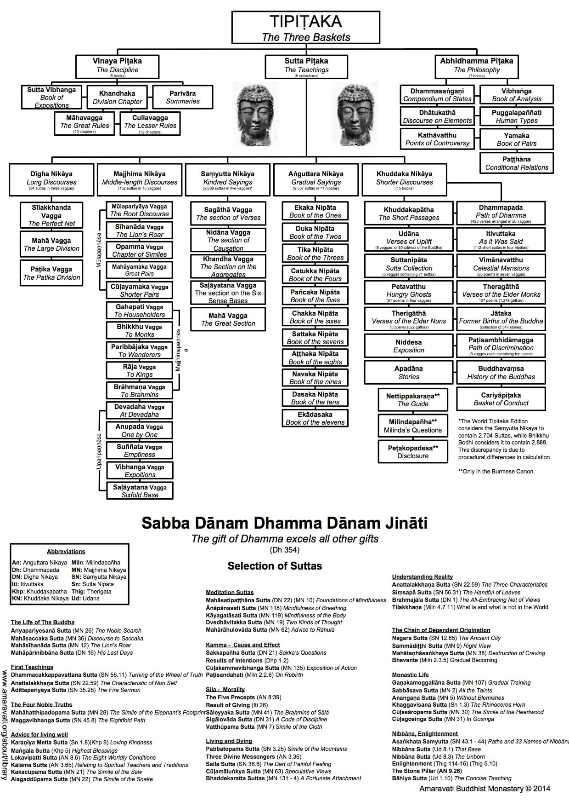
Prática
Últimos Artigos
Galeria
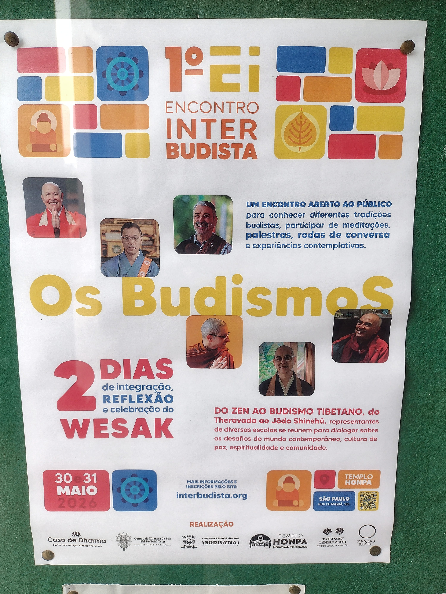
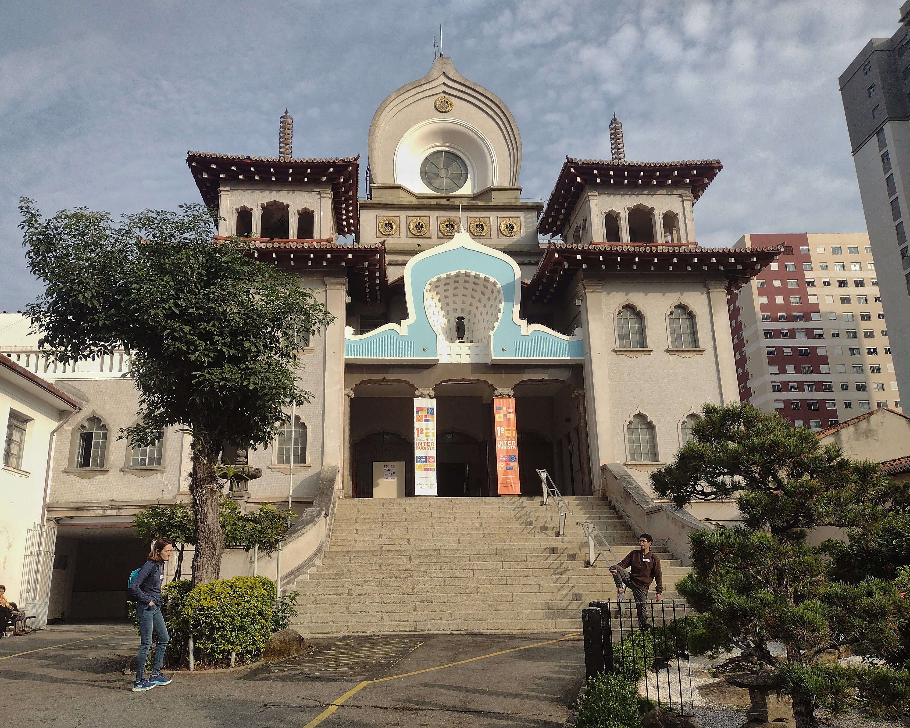
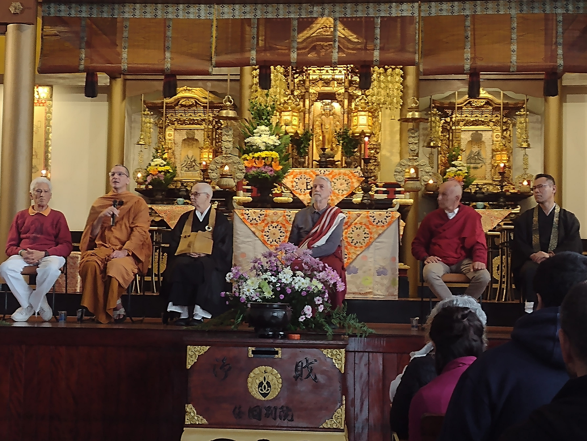


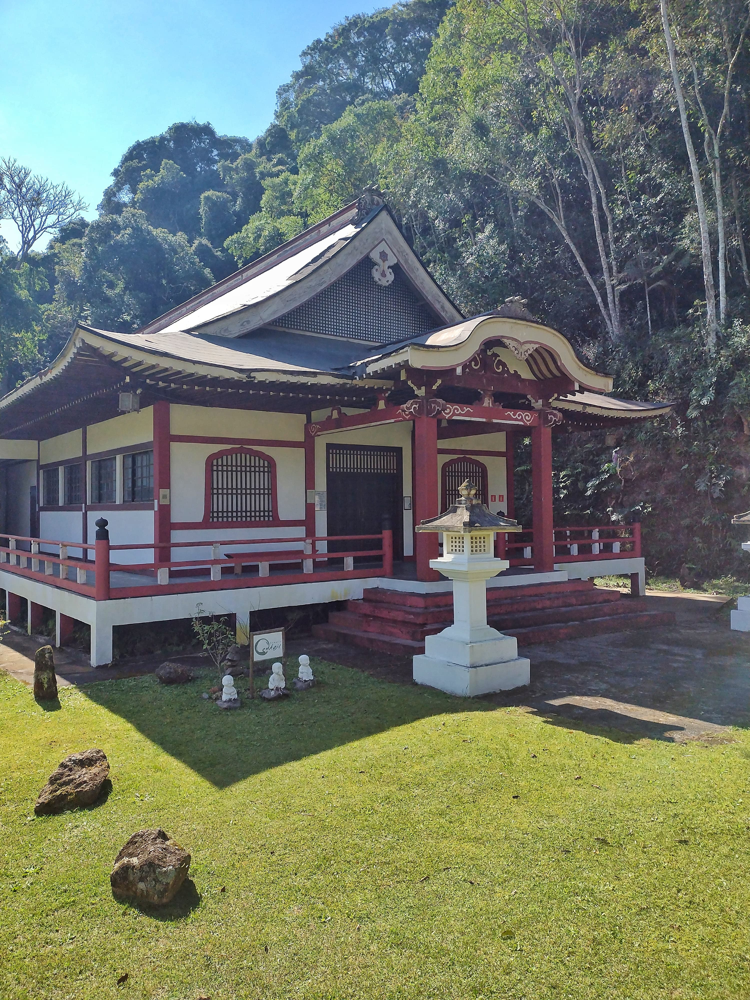


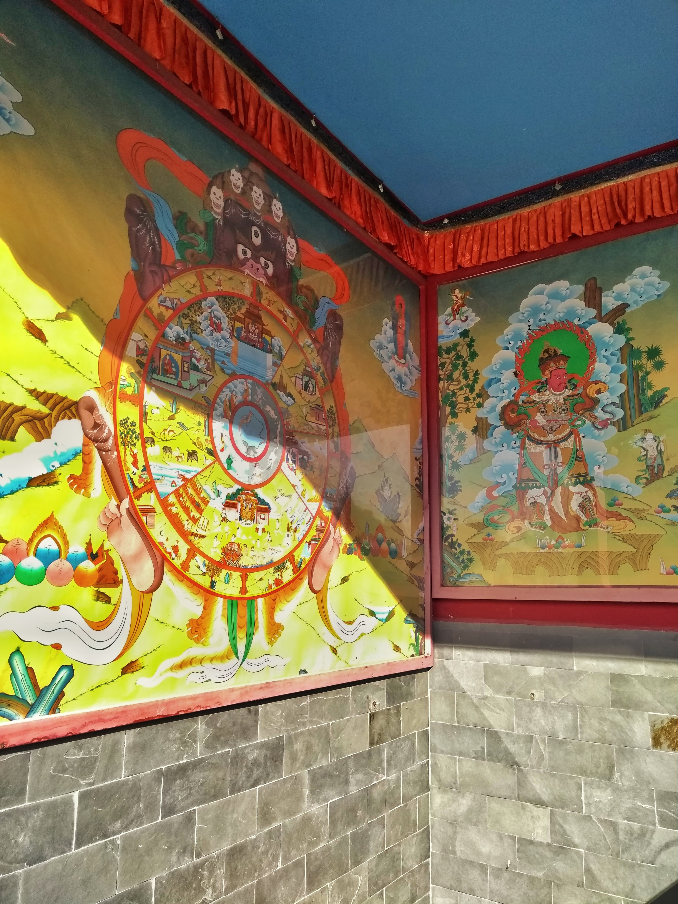


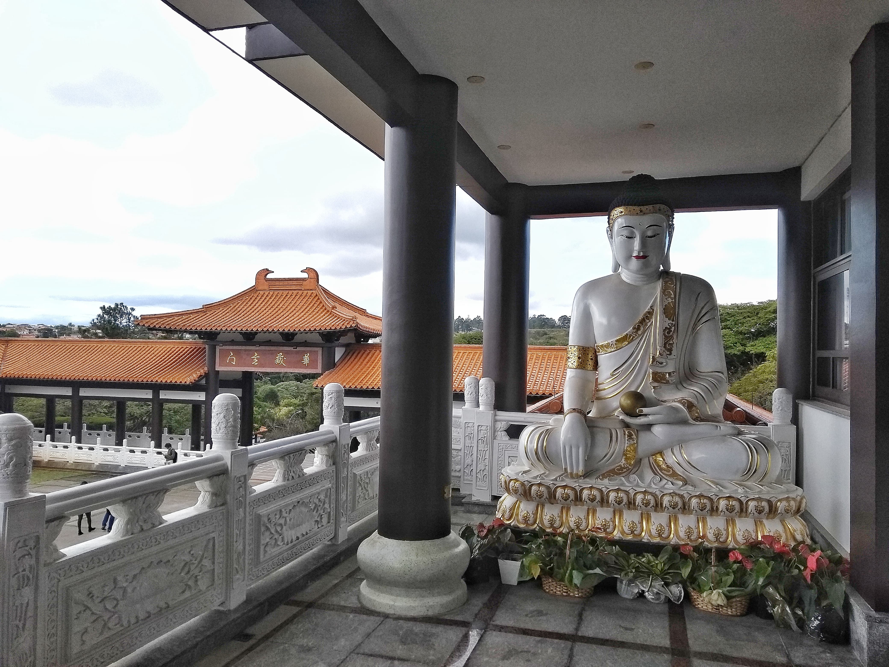
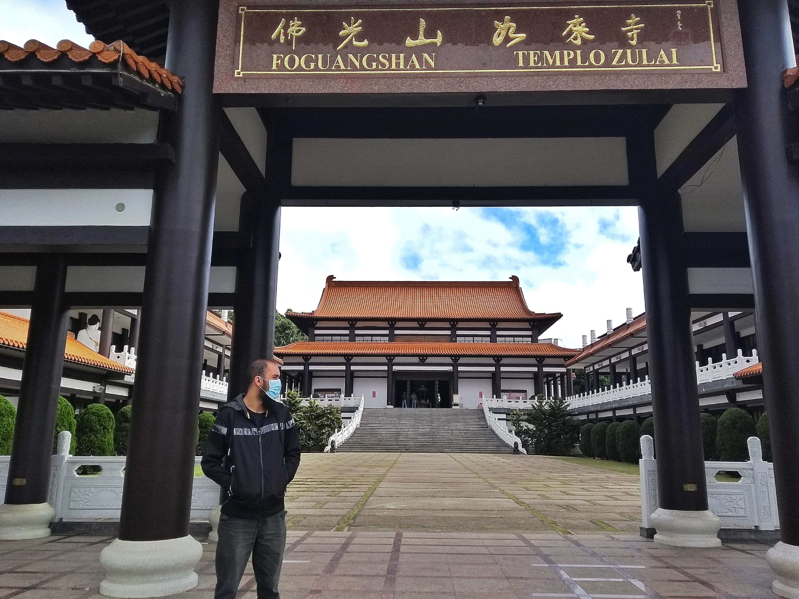
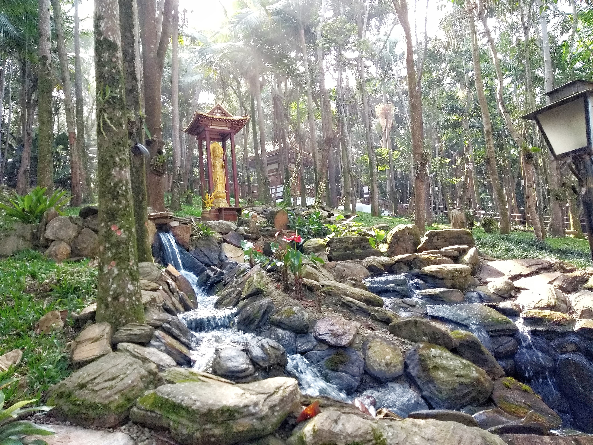
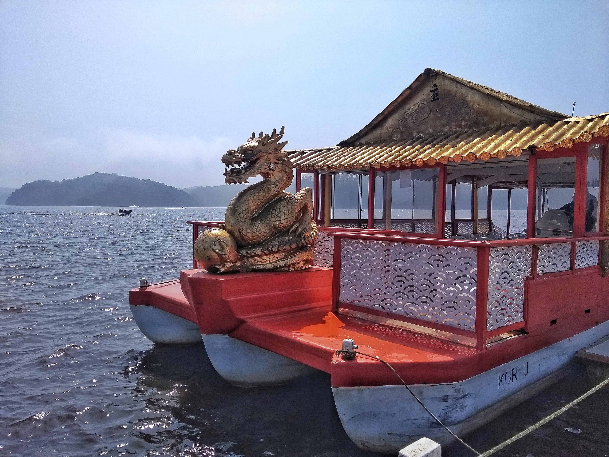
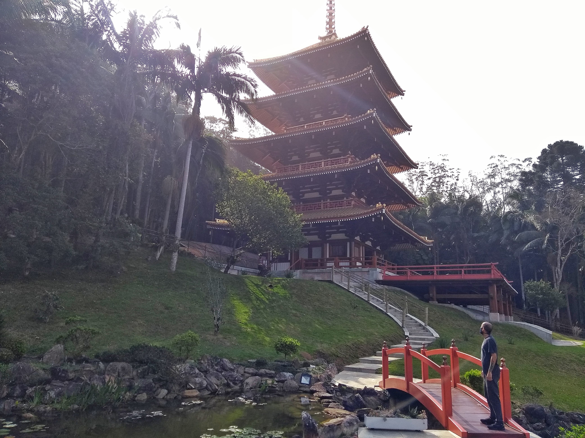